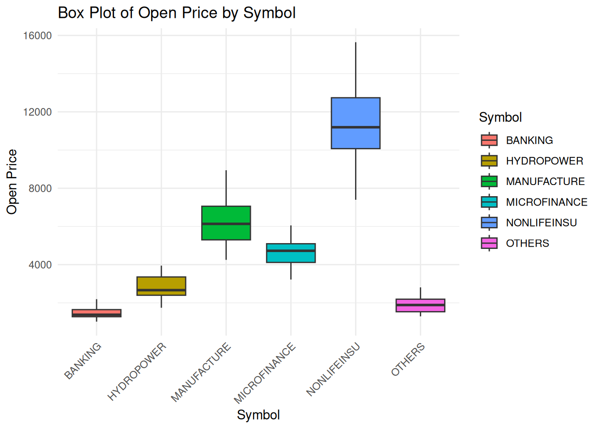
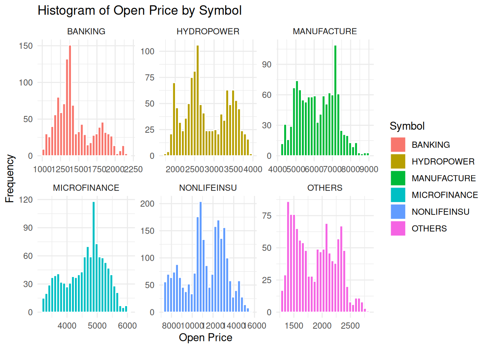
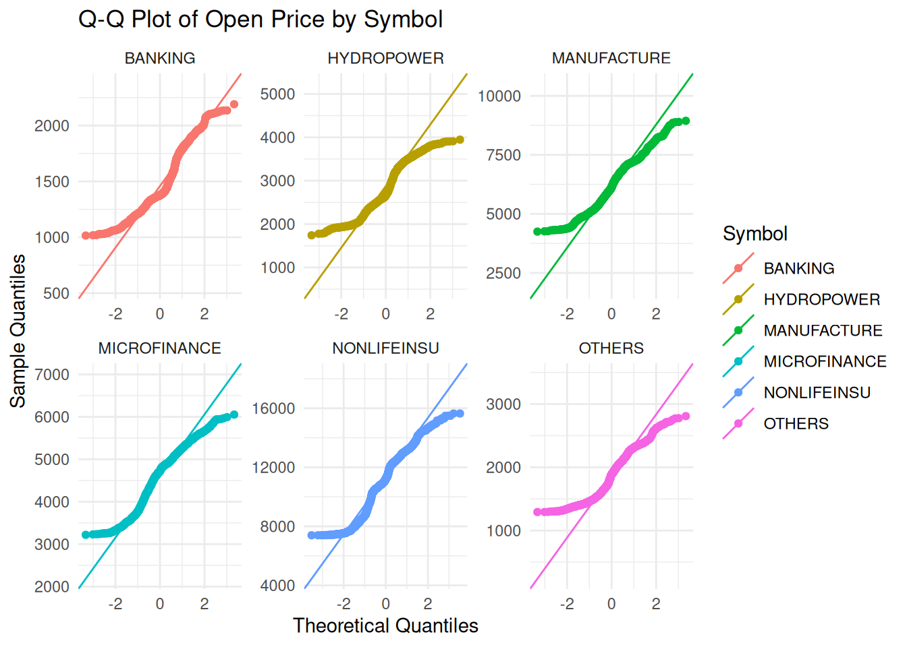

The following objects are masked from 'package:stats':
filter, lag
The following objects are masked from 'package:base':
intersect, setdiff, setequal, union
library(ggplot2)nepse_data <-read.csv("Stastistics/data/nepse.csv")# sort data in ascending order by Datenepse_data <- nepse_data |>mutate(Date =as.Date(Date)) |>arrange(Date,)head(nepse_data,5)
# box plotsggplot(nepse_data, aes(x = Symbol, y = Open, fill = Symbol)) +geom_boxplot() +labs(title ="Box Plot of Open Price by Symbol", x ="Symbol", y ="Open Price") +theme_minimal() +theme(axis.text.x =element_text(angle =45, hjust =1))

Histogram
ggplot(nepse_data, aes(x = Open, fill = Symbol)) +geom_histogram(bins =30, color ="white") +facet_wrap(~Symbol, scales ="free") +# 'scales = "free"' allows different axes per categorylabs(title ="Histogram of Open Price by Symbol", x ="Open Price", y ="Frequency") +theme_minimal()

Q-Q Plot
library(ggplot2)ggplot(nepse_data, aes(sample = Open, color = Symbol)) +stat_qq() +stat_qq_line() +facet_wrap(~Symbol, scales ="free") +labs(title ="Q-Q Plot of Open Price by Symbol",x ="Theoretical Quantiles",y ="Sample Quantiles") +theme_minimal()

Probability Distribution or Return
library(moments)# Calculate daily percentage returnssector_returns <- nepse_data |>group_by(Symbol) |>arrange(Date) |>mutate(Return = (Open -lag(Open)) /lag(Open)) |>filter(!is.na(Return)) # Remove the first row which becomes NA# Summarize distribution metricsdistribution_stats <- sector_returns |>summarise(Mean =mean(Return),SD =sd(Return),Skewness =skewness(Return),Kurtosis =kurtosis(Return) )print(distribution_stats)
For simple linear trends (time-based) and non-linear patterns (using polynomials), we can fit these models:
# Simple Linear: Return ~ Datelinear_model <-lm(Return ~as.numeric(Date), data = sector_returns)# Non-linear (Quadratic): Return ~ Date + Date^2nonlinear_model <-lm(Return ~poly(as.numeric(Date), 2), data = sector_returns)summary(linear_model)
Call:
lm(formula = Return ~ as.numeric(Date), data = sector_returns)
Residuals:
Min 1Q Median 3Q Max
-0.098101 -0.008884 -0.000331 0.006021 0.110583
Coefficients:
Estimate Std. Error t value Pr(>|t|)
(Intercept) -2.829e-04 7.084e-03 -0.040 0.968
as.numeric(Date) 3.051e-08 3.624e-07 0.084 0.933
Residual standard error: 0.01722 on 8147 degrees of freedom
Multiple R-squared: 8.699e-07, Adjusted R-squared: -0.0001219
F-statistic: 0.007087 on 1 and 8147 DF, p-value: 0.9329
Multiple Linear Regression
We will predict the Return of a specific sector using its own lag(Return) and the Market_Index (if you have one; here I demonstrate using lagged returns as an autoregressive model).
# Prepare lagged data for regressionmodel_data <- sector_returns %>%group_by(Symbol) %>%mutate(Lag_Return =lag(Return)) %>%filter(!is.na(Lag_Return))# Regression: Return vs Lagged Returnmulti_reg <-lm(Return ~ Lag_Return + Symbol, data = model_data)summary(multi_reg)
Call:
lm(formula = Return ~ Lag_Return + Symbol, data = model_data)
Residuals:
Min 1Q Median 3Q Max
-0.097732 -0.008877 -0.000324 0.006060 0.110918
Coefficients:
Estimate Std. Error t value Pr(>|t|)
(Intercept) -9.672e-05 5.049e-04 -0.192 0.8481
Lag_Return 2.155e-02 1.108e-02 1.945 0.0518 .
SymbolHYDROPOWER 8.809e-04 7.141e-04 1.234 0.2174
SymbolMANUFACTURE 5.621e-04 7.141e-04 0.787 0.4312
SymbolMICROFINANCE 4.695e-04 7.141e-04 0.657 0.5109
SymbolNONLIFEINSU 1.756e-04 6.183e-04 0.284 0.7764
SymbolOTHERS 4.965e-04 7.141e-04 0.695 0.4868
---
Signif. codes: 0 '***' 0.001 '**' 0.01 '*' 0.05 '.' 0.1 ' ' 1
Residual standard error: 0.01722 on 8136 degrees of freedom
Multiple R-squared: 0.0007326, Adjusted R-squared: -4.315e-06
F-statistic: 0.9941 on 6 and 8136 DF, p-value: 0.4272
Chi-Square Test
To study the dependence between return direction (Gain/Loss) and the Month:
library(lubridate)
Attaching package: 'lubridate'
The following objects are masked from 'package:base':
date, intersect, setdiff, union
ANOVA tests if the mean returns differ significantly across months or sectors.
# ANOVA: Return by Monthanova_month <-aov(Return ~factor(month(Date)), data = sector_returns)summary(anova_month)
Df Sum Sq Mean Sq F value Pr(>F)
factor(month(Date)) 11 0.031 0.0028192 9.618 <2e-16 ***
Residuals 8137 2.385 0.0002931
---
Signif. codes: 0 '***' 0.001 '**' 0.01 '*' 0.05 '.' 0.1 ' ' 1
# ANOVA: Return by Sectoranova_sector <-aov(Return ~ Symbol, data = sector_returns)summary(anova_sector)
Df Sum Sq Mean Sq F value Pr(>F)
Symbol 5 0.0007 0.0001311 0.442 0.819
Residuals 8143 2.4154 0.0002966
Non-Parametric Tests
If your normality tests (from the previous step) failed, use these robust alternatives:
# Kruskal-Wallis (Comparing Returns across Symbols)kw_test <-kruskal.test(Return ~ Symbol, data = sector_returns)print(kw_test)
Kruskal-Wallis rank sum test
data: Return by Symbol
Kruskal-Wallis chi-squared = 12.671, df = 5, p-value = 0.02666
# Mann-Whitney (Comparing two specific sectors, e.g., BANKING vs OTHERS)# Subset data for two groupssubset_data <- sector_returns %>%filter(Symbol %in%c("BANKING", "OTHERS"))mw_test <-wilcox.test(Return ~ Symbol, data = subset_data)print(mw_test)
Wilcoxon rank sum test with continuity correction
data: Return by Symbol
W = 679237, p-value = 0.9122
alternative hypothesis: true location shift is not equal to 0
# Complete seasonality detection function################################################################################ NEPSE Seasonal Trading Strategies - Extended Analysis Code# This script contains all analyses NOT found in the original EDA file.# Run after loading the cleaned data (sector_returns with columns:# Symbol, Date, Return)################################################################################ ===========================# 0. Load required libraries# ===========================library(dplyr)library(ggplot2)library(lubridate)library(boot)library(WRS2) # for robust ANOVA (trimmed means)library(lmPerm) # for permutation testslibrary(tidyr)library(purrr)# ===========================# 1. Data preparation (if not already done)# Assumes you already have 'sector_returns' data frame from the EDA.# If not, uncomment and adapt the lines below.# ===========================# nepse_data <- read.csv("Statistics/data/nepse.csv")# nepse_data <- nepse_data %>%# mutate(Date = as.Date(Date)) %>%################################################################################ NEPSE Seasonal Trading Strategies - FULL EXTENDED ANALYSIS# Corrected version - no bootstrapping errors# Assumes 'sector_returns' exists with columns: Symbol, Date, Return################################################################################ ===========================# 0. Load required libraries# ===========================library(dplyr)library(ggplot2)library(lubridate)library(boot)library(WRS2) library(lmPerm) library(tidyr)library(purrr)# ===========================# 1. Monthly ranking analysis (best/worst months per sector)# ===========================monthly_returns <- sector_returns %>%mutate(Month =month(Date, label =TRUE)) %>%group_by(Symbol, Month) %>%summarise(Mean_Return =mean(Return, na.rm =TRUE),Median_Return =median(Return, na.rm =TRUE),Win_Ratio =sum(Return >0) /n(),Sharpe =mean(Return) /sd(Return),.groups ="drop" ) %>%arrange(Symbol, Month)best_months <- monthly_returns %>%group_by(Symbol) %>%slice_max(Mean_Return, n =2) %>%ungroup()cat("\n===== Best months per sector =====\n")
===== Best months per sector =====
print(best_months)
# A tibble: 12 × 6
Symbol Month Mean_Return Median_Return Win_Ratio Sharpe
<chr> <ord> <dbl> <dbl> <dbl> <dbl>
1 BANKING जुलाई 0.00576 0.00342 0.602 0.286
2 BANKING मई 0.00140 -0.000237 0.495 0.0976
3 HYDROPOWER जनवरी 0.00704 0.00438 0.624 0.345
4 HYDROPOWER जुलाई 0.00463 0.00196 0.558 0.229
5 MANUFACTURE जुलाई 0.00544 0.00670 0.637 0.290
6 MANUFACTURE दिसम्बर 0.00338 0.000917 0.515 0.159
7 MICROFINANCE जुलाई 0.00415 0.00242 0.549 0.221
8 MICROFINANCE जनवरी 0.00356 0.000212 0.505 0.229
9 NONLIFEINSU जनवरी 0.00231 0 0.296 0.191
10 NONLIFEINSU जुलाई 0.00187 0 0.292 0.172
11 OTHERS जुलाई 0.00477 0.00355 0.558 0.218
12 OTHERS जनवरी 0.00434 0.00200 0.525 0.228
worst_months <- monthly_returns %>%group_by(Symbol) %>%slice_min(Mean_Return, n =2) %>%ungroup()cat("\n===== Worst months per sector =====\n")
# Optional plotp_cum <-ggplot(cumulative_pattern, aes(x = DayOfYear, y = Cumulative_Mean, color = Symbol)) +geom_line() +labs(title ="Cumulative mean return by day of year",x ="Day of year", y ="Cumulative return") +theme_minimal()print(p_cum)
# Example: BANKING in Kartik (month 8) - explicit checkbanking_kartik_returns <- sector_returns %>%filter(Symbol =="BANKING", month(Date) ==8) %>%pull(Return)if (length(banking_kartik_returns) >=2) {set.seed(123) boot_bank_kart <-boot(banking_kartik_returns, boot_mean, R =5000) ci_bank_kart <-boot.ci(boot_bank_kart, type ="perc")cat("\n===== Specific CI for BANKING in Kartik (month 8) =====\n")print(ci_bank_kart)}
===== Specific CI for BANKING in Kartik (month 8) =====
BOOTSTRAP CONFIDENCE INTERVAL CALCULATIONS
Based on 5000 bootstrap replicates
CALL :
boot.ci(boot.out = boot_bank_kart, type = "perc")
Intervals :
Level Percentile
95% (-0.0043, 0.0013 )
Calculations and Intervals on Original Scale
Call:
t1way(formula = Return ~ factor(month(Date)), data = sector_returns,
tr = 0.2)
Test statistic: F = 12.2662
Degrees of freedom 1: 11
Degrees of freedom 2: 1905.13
p-value: 0
Explanatory measure of effect size: 0.16
Bootstrap CI: [0.13; 0.19]
# 6b. Permutation test for month effect (slower, but robust)set.seed(123)perm_anova_month <-aovp(Return ~factor(month(Date)), data = sector_returns, np =1000) # 1000 permutations